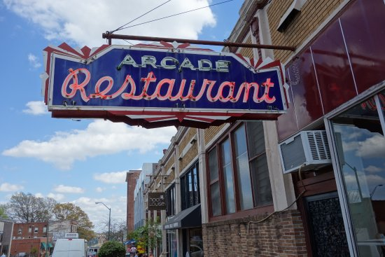
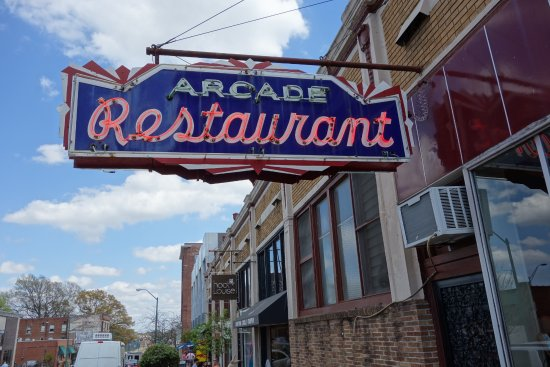

The Arcade has the honor of being Memphis' oldest restaurant. Speros Zepatos founded the diner in 1919 after immigrating from Cephalonia, Greece. Situated at the corner of South Main Street and G.E. Patterson, the original building was a small, one story, wood framed building. Food was actually cooked on potbelly stoves! In 1925, Speroes tore down the wood stucture and built the Arcade Building in a Greek revival style, complete with retail stores to signify the "Arcade" name.